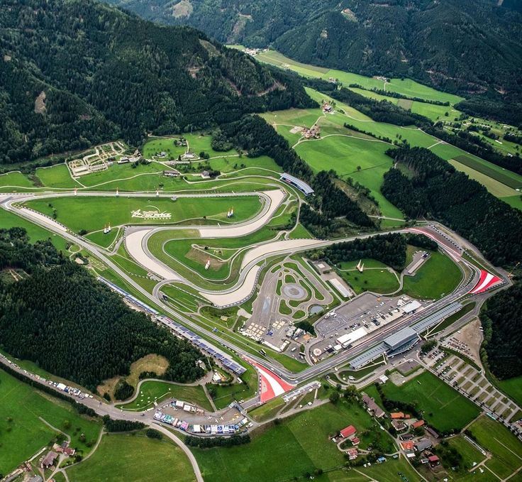

Red Bull Ring

Technical Details
Location: Spielberg, Austria
Length: 4.318 km
Laps: 71
First GP: 1970
Curiosities
The Red Bull Ring is located in the Styrian mountains and is one of the shortest but most scenic circuits on the calendar. Originally known as the Österreichring, it was heavily redeveloped and reintroduced by Red Bull. The track features elevation changes and fast straights leading into heavy braking zones. It is often associated with close racing and track limit controversies.